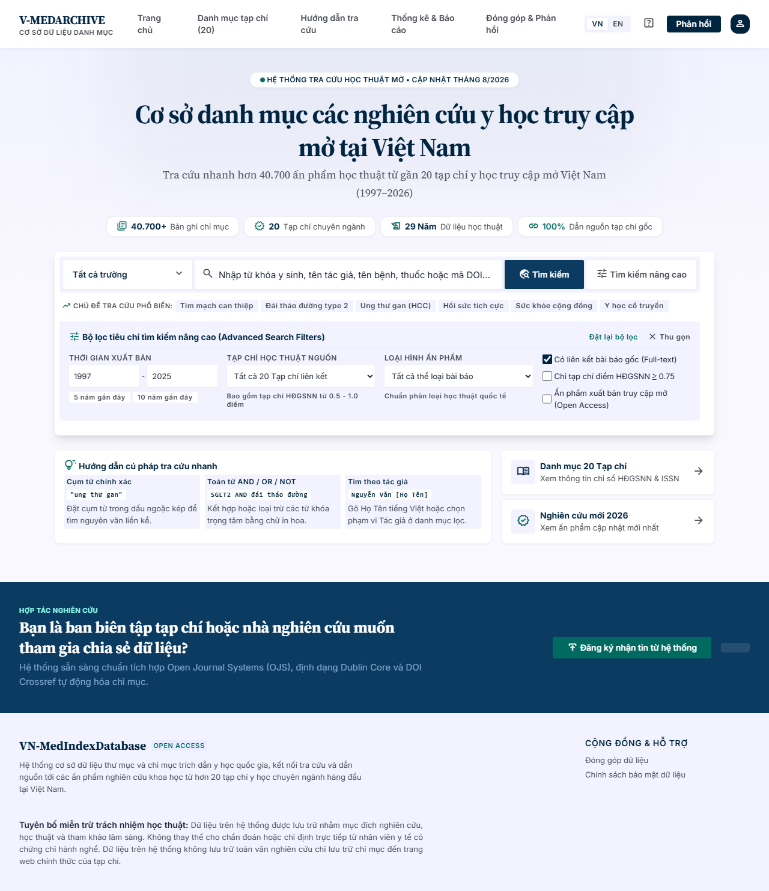

V-MEDARCHIVE — Cổng tra cứu & CSDL Y học Việt Nam
Vietnamese Medical Research Database & Search Portal

Mục tiêu & Giá trị cốt lõi
- Tập hợp và chuẩn hóa hơn 45.000 bài báo y học xuất bản trên các tạp chí y học hàng đầu Việt Nam được tính điểm bởi Hội đồng Giáo sư Nhà nước (HĐGSNN).
- Phục vụ cộng đồng bác sĩ lâm sàng, giảng viên đại học y dược, học viên sau đại học (ThS, CK1, CK2, NCS) và sinh viên y khoa tra cứu tài liệu nhanh chóng.
- Cung cấp đường dẫn toàn văn trực tiếp (HTML/PDF) và trích dẫn chuẩn mực cho từng công trình nghiên cứu.
Tính năng Vượt trội
- Bộ máy tìm kiếm AST: Phân tích cú pháp chuyên sâu (Boolean AND/OR/NOT, ngoặc đơn gom nhóm, cụm từ ngoặc kép, tiền tố trường, khử dấu tiếng Việt tự động).
- Tổng hợp bằng chứng AI: Ứng dụng Google Gemini 2.0 Flash tóm tắt xu hướng nghiên cứu, phương pháp đối tượng và phát hiện khoảng trống lâm sàng từ tối đa 20 bài báo mới nhất.
- Xuất trích dẫn tự động: Hỗ trợ 3 chuẩn học thuật phổ biến (Vancouver, APA, BibTeX .bib) chỉ với 1 cú click.
- Xác thực 1-chạm: Tích hợp Google Identity Services (GIS) OAuth 2.0 & Google One Tap bảo mật và mượt mà.
Kiến trúc Công nghệ Hiện đại
| Tầng Hệ thống | Công nghệ Áp dụng | Chi tiết Triển khai |
|---|---|---|
| Frontend SPA | React 19, TypeScript, Vite 6, Tailwind CSS | Giao diện phản hồi tức thì, Design Tokens y tế chuyên sâu, Dark mode |
| Backend & AI Proxy | Google Cloud Run, Node.js ES Module | Bảo mật GEMINI_API_KEY, Sliding Window IP Rate Limiter (30 req/min) |
| Hosting & CDN | Firebase Hosting (vmed-archieve.web.app) | Phân phối CDN toàn cầu, rewrite tự động tới dịch vụ Cloud Run |
| Cơ sở Dữ liệu | Google Sheets CSV + Client-side In-Memory | Tải và phân tích vào RAM một lần, tìm kiếm tức thì độ trễ zero |
Cơ sở dữ liệu danh mục bài báo trực tiếp Cập nhật tự động
WHO TB Data Summary Page (Vietnam Tuberculosis Profile)
Phân tích xu hướng gánh nặng bệnh lao quốc gia theo báo cáo của Tổ chức Y tế Thế giới (WHO)
Trang tổng hợp số liệu bệnh lao trình bày dữ liệu hồ sơ quốc gia Việt Nam theo báo cáo của WHO năm 2023 và 2024. Bảng 1 hiển thị xu hướng ước tính gánh nặng lao 5 năm (tỷ lệ mắc mới, tử vong do lao ở người nhiễm HIV, độ bao phủ điều trị). Bảng 2 chi tiết về ước tính gánh nặng lao kháng đa thuốc (MDR/RR-TB). Báo cáo tích hợp các biểu đồ trực quan hóa chuỗi thời gian từ 2010 đến 2022 và tháp dân số ca bệnh lao theo nhóm tuổi và giới tính.
Running Races Performance Dashboard 2025
Hệ thống theo dõi & đánh giá hiệu suất vận động viên tại các giải marathon Việt Nam
Dashboard trực quan hóa tổng kết các giải chạy marathon lớn trong năm 2025, bao gồm Aikyra Trà Vinh Cross Country Marathon, Dalat Ultra Trail, Quảng Bình Discovery Marathon, Thiên Cầm Half Marathon và VnExpress Marathon HCM Midnight. Hệ thống cung cấp công cụ phân tích phân phối cự ly (distance), thời gian hoàn thành (finish time) và tốc độ trung bình (pace) phục vụ việc đánh giá tiến độ rèn luyện của runner.
Do Tableau Public giới hạn bảo mật khi nhúng iframe trên trình duyệt di động, bạn có thể xem trực tiếp dashboard tương tác tại liên kết chính thức:
Khám phá Dashboard trên Tableau Public